梅杜莎凝視 · 可交付版
正式獎圖、角色蛇髮、背景、盤框介面與音效已整合。九條蛇各自使用五節骨骼及獨立下顎，角色採 Spine 4.3.13，包含 24 段動作。
本地完整建置與動作檢查通過；Stake Engine 上傳驗收由使用者操作。角色語音為合成預聽。倍率球層次 · 低倍至神威 · 2026-10-31
2×～500× 的球體、光芒、凝聚光點、飛行尾流與命中力道隨倍率平順增強。低倍清脆俐落，中倍帶紫色晶光，高倍轉為金色光冠；250×／500× 增加金色火冠、希臘刻紋與分層衝擊波。數字保持正向並位於球體前方，鏡頭與盤框固定。
蓄力、釋放與風壓音量隨倍率增加，晶石命中由清脆漸混入厚實重擊；三顆球共享飛行風聲預算。350ms 蓄力、600ms 飛行及三種 TURBO 的人物／倍率聲畫時序維持。
聲音對照依序為 2×、25×、100×、500×；各例使用相同輸出增益。仍使用本款原創合成音訊。
完整建置通過，型別檢查 0 錯誤、1 個既有設定警告。OFF／TURBO 2 本地回放各完成 $12.50 並返回待機；三球示例完成 ×663／$663.00，未見殘留球體或音訊載入錯誤。未錄製影片。
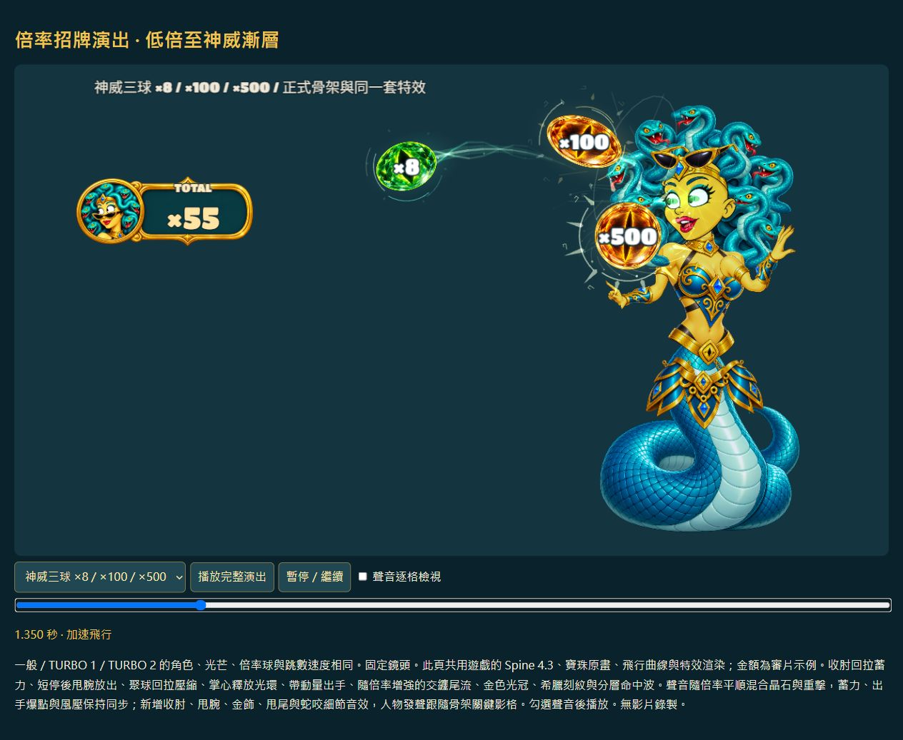
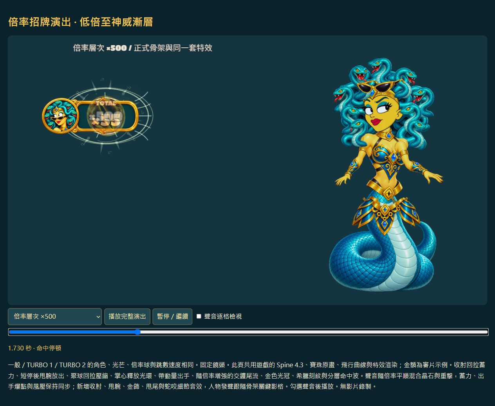
希臘神殿 INFO、操作列與音效節奏 · 2026-10-31
參考高爾夫說明的封面、章節索引與三步圖解結構，轉成青綠、金邊與大理石的希臘神殿。遊戲說明與賠付表在同一視窗互切，提供章節跳轉、叉號關閉、Escape 與鍵盤焦點限制。手機叉號 44px，賠付以固定三欄清楚列出數量與 ×數，320px 也能完整顯示 100×。
操作列改用較清楚的數字字體，降低數值彈跳；點選、開啟、切頁與關閉有較輕的提示。多顆倍率球共用飛行風聲增益預算，避免疊加過響，保留人物出手與重擊的層次。三種 TURBO 的人物與倍率演出使用相同時序。
完整建置通過；型別檢查 0 錯誤、1 個既有設定警告。桌面、390／320px 排版、BET／AUTO 選中反饋與本地倍率回放已檢查。本輪未重跑先前的 15 次免費遊戲，角色發聲仍為原創合成。無影片輸出。
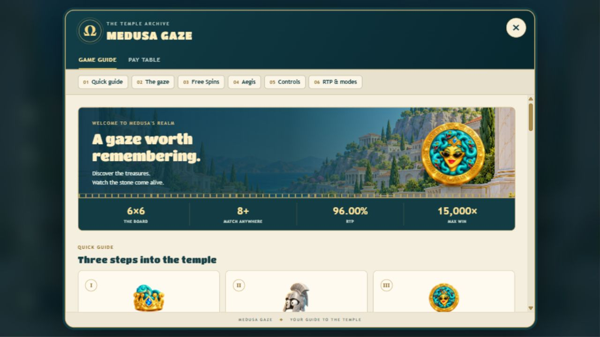
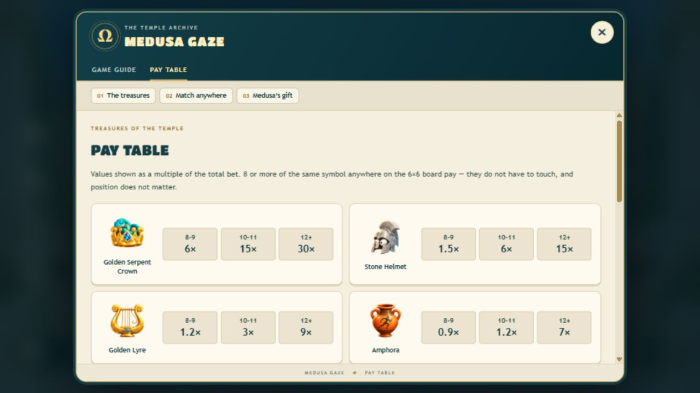
人物動作與聲音對拍 · v9 · 2026-10-31
收肘有衣料與聚氣摩擦、甩腕帶一聲短促金飾碰觸，蛇尾收勢有乾爽鱗片掠動，單條蛇雙咬有輕重變化。得意拇指手勢補上小幅甩腕、金飾輕響和短促發聲；發聲設有間隔，減少連消時的重複感。施法聲仍保留原有力道，細節音效襯托動作。
人物發聲與墨鏡聲改由骨架關鍵影格觸發，中途切換動作不會晚冒出上一段聲音；收勢演完才接回呼吸，施法嘴型也涵蓋整段發聲。20 段動作共 60 個聲音節點，65 個音訊檔檢查通過。三種 TURBO 使用相同人物與倍率聲畫時序。
十秒聲音示例：一般局施法 → 得意手勢 → 蛇髮雙咬 → 免費遊戲施法。角色發聲仍為原創合成版本。
正式建置通過；型別檢查 0 錯誤、1 個既有設定警告。本地 OFF／TURBO 2 各完成一局 $12.50 並返回待機；MG／FG 三球審片完成，沒有音訊載入錯誤。未錄製影片。
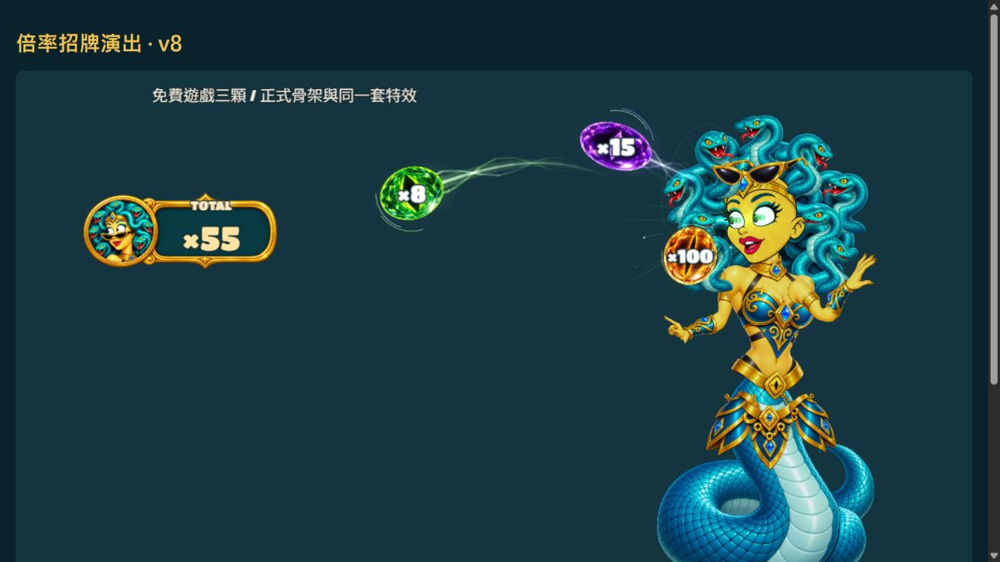
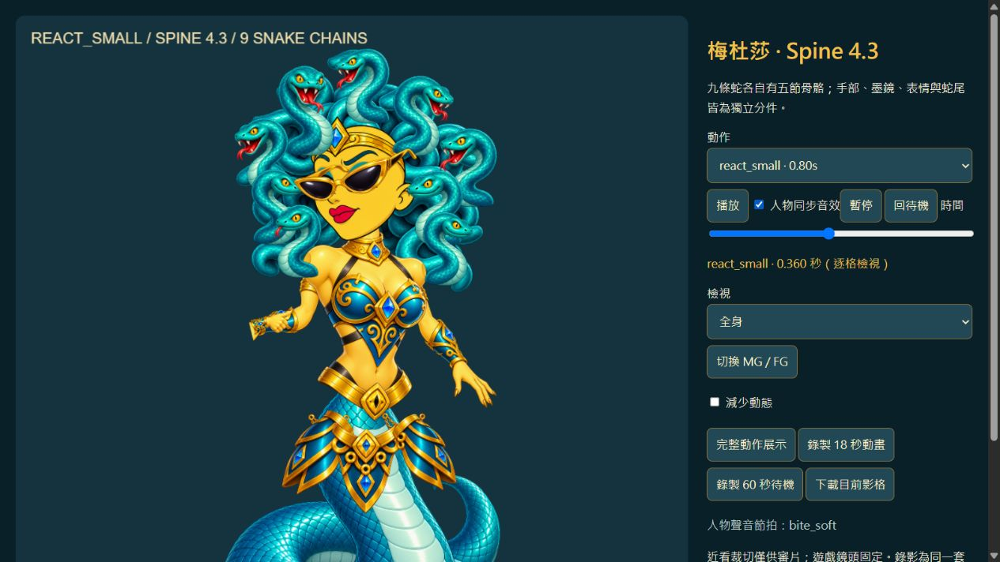
整場動態巡視與修整 · 2026-10-31
石化碎裂改為八塊大小不一的石塊，保留原畫與裂紋銜接；短暫停頓後錯時崩開，細屑與薄塵跟著力道散去。中獎暗幕與得分文字平順進退，減少連消切換的突兀。鳥群加入短促拍翼與較長的滑翔，左側雲流、火焰與固定鏡頭維持原有構圖。
人物全身呼吸、九蛇威嚇、丟球蓄力與三種 TURBO 相同的倍率演出時序已複查。這輪完成 15 次免費遊戲，累積 ×110、總得分 $198.90，正常退回白天主遊戲；未得分倍率球亦完成碎裂回收並返回待機。建置通過，型別檢查 0 錯誤、1 個既有設定警告。
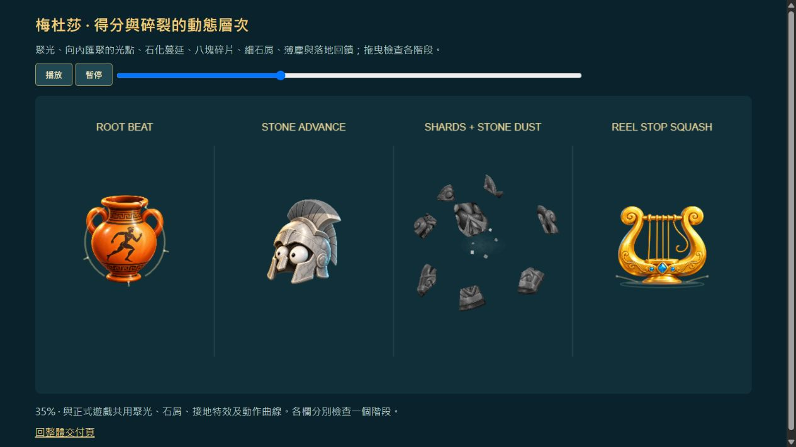
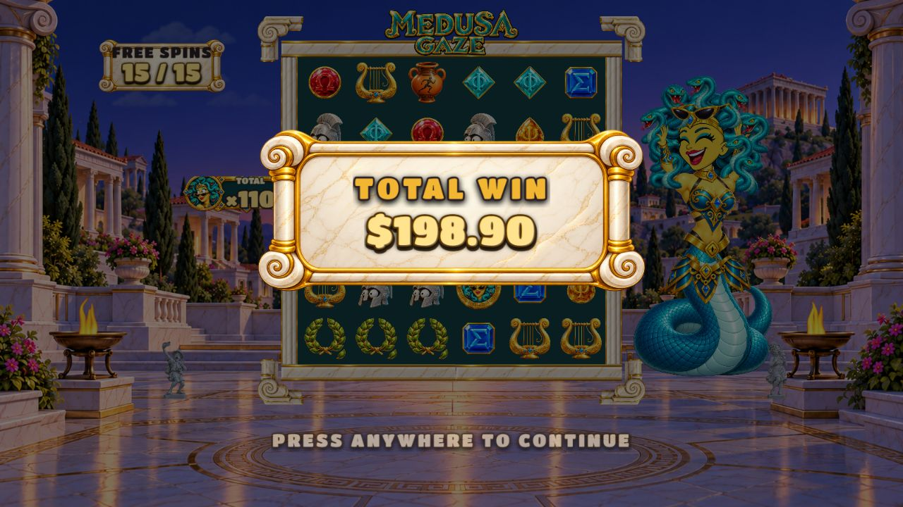
本地回放；等待點選進退場面板時曾出現既有 15 秒 watchdog 訊息，兩個面板均正常繼續。未進行本輪手機與真實 RGS 驗收。
依 PP 動作研究優化 · 2026-10-31
依 slot-motion-recipes 的柔和曲線、局部錯時與立體看向調整。人物加上預備、看向盤面、舉手停留及收勢，停留時保有胸腹與肩頸動態；九蛇威嚇、全身呼吸與丟球蓄力保留。獎圖以蛇冠、盔冠、琴弦、陶瓶把手與花環的局部演繹搭配節拍邊光，減少整張貼圖跳動。補位同時掉落，接地後兩次遞減回彈，不再疊第二支落地動畫。
沿用本款原畫與 Spine 4.3；人物為 84 骨、24 段動畫。節奏依梅杜莎連消改編為表演 567ms、掉落 360ms，八連消預算 9870ms。三種 TURBO 的人物、倍率球與聲畫時序相同。
正式建置與網格檢查通過；型別檢查 0 錯誤、1 個設定警告。本地 OFF／TURBO 2 各完成一局 $12.50 並返回待機；FG 三球審片顯示 ×178／$178.00，墨鏡保持額頭。未錄製影片。
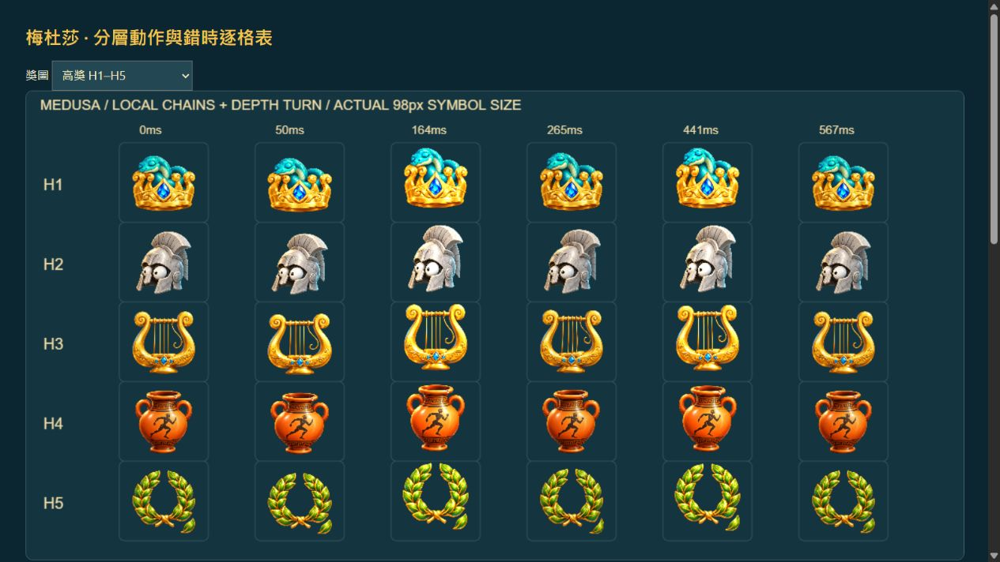
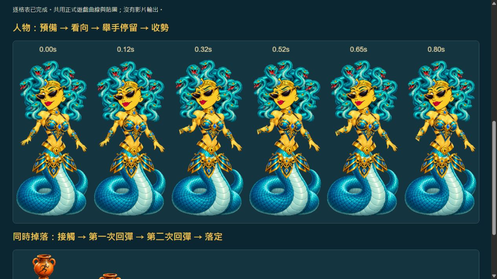
手臂蓄力與甩腕 · 2026-10-31
手臂配合 350ms 球體蓄力，先收肘回拉、壓腕並短停，再向前上方甩出；手腕稍後跟進，帶過衝與回彈收勢。蓄力肘彎曲變化約 30 度，肩胸也隨回拉蓄勢，另一手捏住墨鏡的接觸仍保持。一般局、免費遊戲與三種 TURBO 均保留相同出手時刻。
一般局 ×25 與免費遊戲三球預覽已完整播放並回到待機，未見音效載入錯誤。24 段骨架檢查無可見網格翻折。
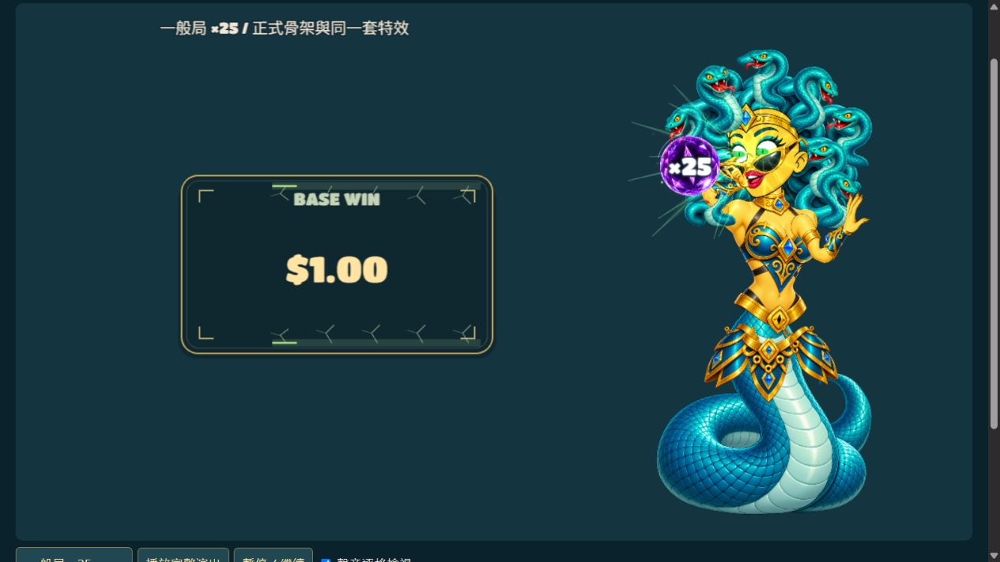
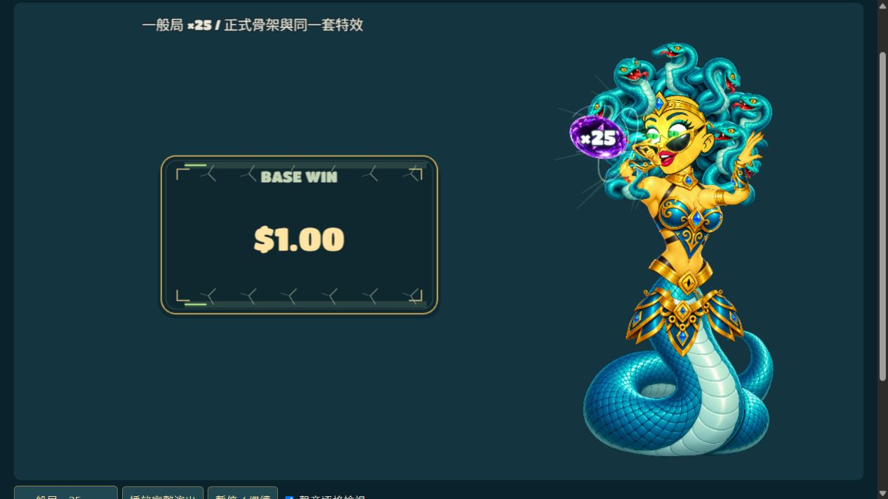
丟球細節與聲音衝擊 · v8 · 2026-10-30
球體離手立即帶有動量，釋放點出現貼合飛行方向的壓力光環、六道碎光與短閃；蓄力碎光沿曲線向內聚攏，倍率數字保持清晰。聲音分成掌心蓄力、角色發聲、出手爆點、600ms 飛行風壓與晶石重擊；出手與數字相撞時短暫壓低配樂，再平順恢復。三種 TURBO 的人物與聲畫演出速度一致。
一般局與免費遊戲三球預覽完成；本地遊戲 OFF／TURBO 2 各回放一局，均顯示 $12.50 並回到待機。60 個音訊檔檢查通過，角色發聲仍為原創合成。
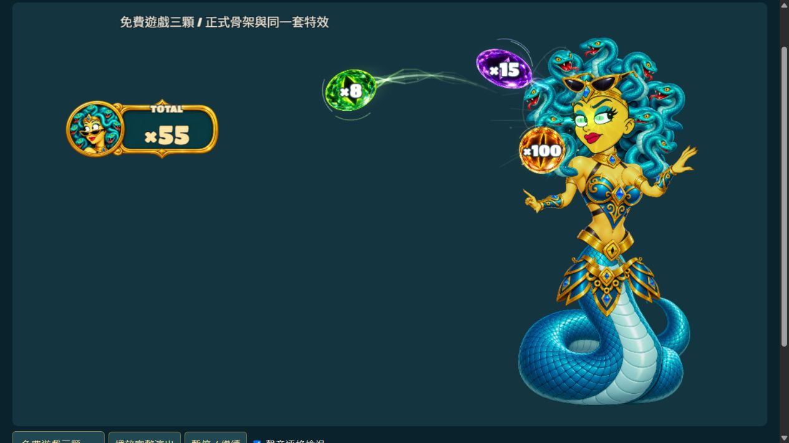
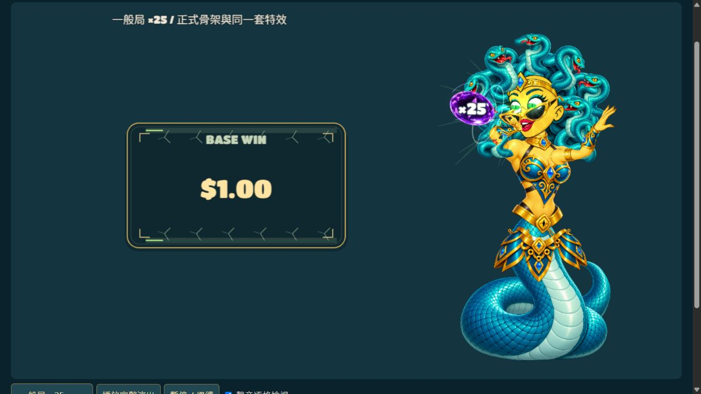
九蛇威嚇與雙咬加強 · 2026-10-30
九條蛇錯開縮頸、探頭、張嘴、連續雙咬與回彈，五節蛇頸傳遞動作。待機嘴端活動幅度相較上一版平均增加約 66%，個別威嚇約增加 42%；施法時也加入二次探頭與咬合。24 段動畫檢查無可見網格翻折，持續保留呼吸與三種 TURBO 的演出時序。
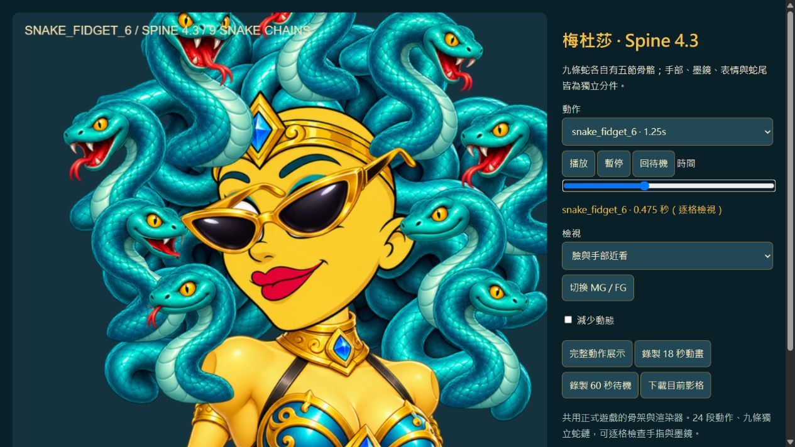
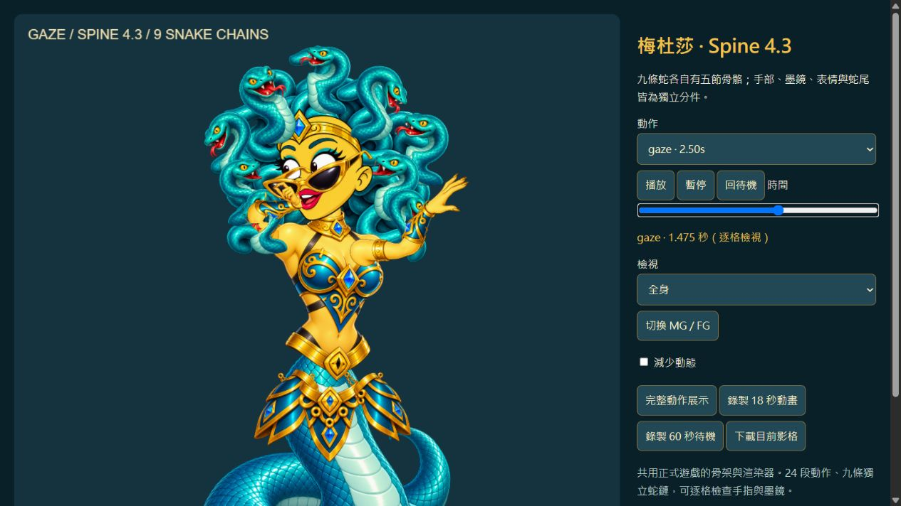
動作流暢度與自然收勢 · 2026-10-30
手腕改沿連續速度弧線移動，減少每個路徑點的停頓；放球後沿肩外側放鬆回收，收勢最高手腕速度約降低四成。蛇髮小動作淡出接入施法，量測切換瞬間位移降至零；回到呼吸的混合延長至 320ms，保留呼吸時鐘。球體蓄力、放出與命中方向連續。三種 TURBO 仍使用相同人物與倍率演出時序。
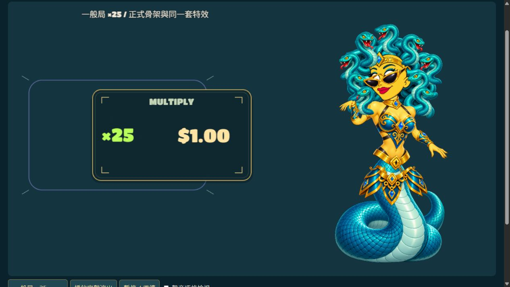
更有個性的倍率演繹 · 2026-10-29
偷瞄、揮臂勾手聚球、回拉壓縮、甩出，最後帶著得意表情與甩尾收勢。倍率球沿蛇形弧線加速，雙股尾流交纏，搭配碎光、球緣弧光與柔光冠；多顆球上下錯開，倍率數字保持正向並位於所有球體之前。補位落地也增加依落差變化的接地亮邊，三種 TURBO 都保留回饋。
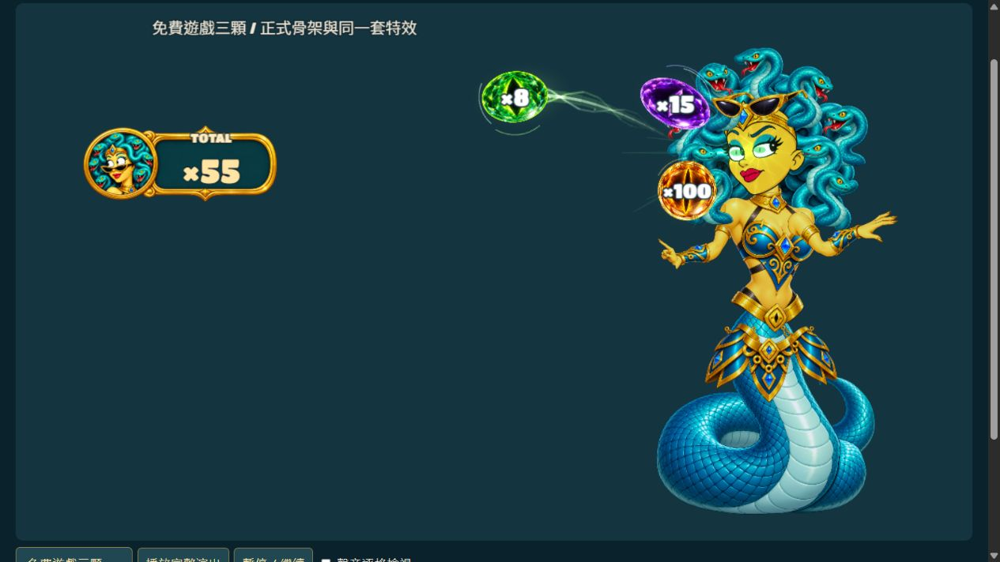
整場動態層次 · 2026-10-27
得分獎圖周圍加入短暫弧形聚光與匯聚光點，得分文字以輕微彈性入場；碎裂增加細石屑與薄塵。人物待機加入偏頭、手腕放鬆；花園有錯開的陣風與旋轉葉片，倍率命中後的綠金光點隨加乘淡出。
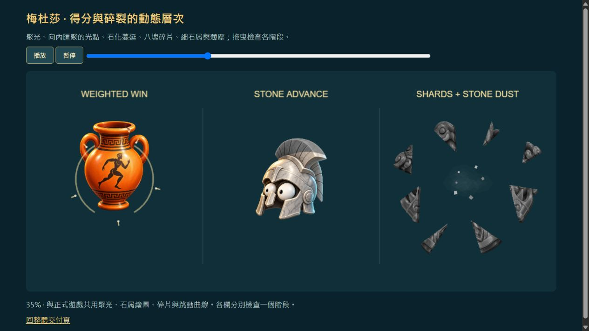
人物與獎圖精修 · 2026-10-27
出手加上胸肩、手勢與尾部的分段回彈，裙片與飾鏈延遲收勢；FG 手勢增加過衝與回收，出手嘴型延長。得分獎圖依材質調整重量；石化由上往下蔓延，再裂成八塊帶厚度、翻轉與重力下墜的碎片。三種 TURBO 的人物與倍率演出速度保持相同。
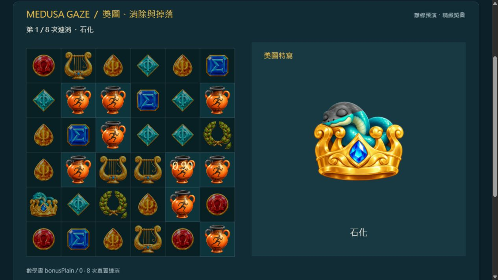
左側天空與鳥群 · 2026-10-27
雲層集中在盤面左側，三條雲流持續循環補入；兩組小鳥群飛過左側開口，搭配三隻遠景鳥。寬螢幕仍保留清楚的雲層與鳥群。
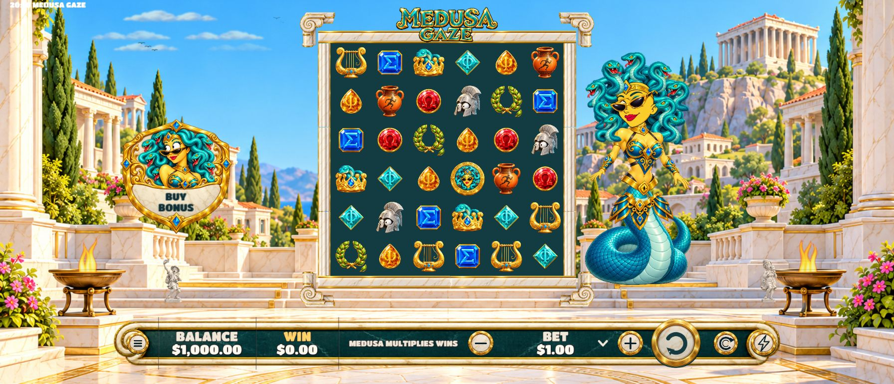
呼吸、自然背景與介面修正 · v6
開始轉輪不重設呼吸；腹腰與蛇尾加強並加入甩尾。火盆持續燃燒、火舌漸細散去；雲層柔化並分層飄移。AUTO 的 ADVANCED 深色、BUY BONUS 押注金額淺色，盾牌文字完整收進白色區。出手吼聲加強，左側「×N」移向中央並以更清楚的聲音相撞加乘。
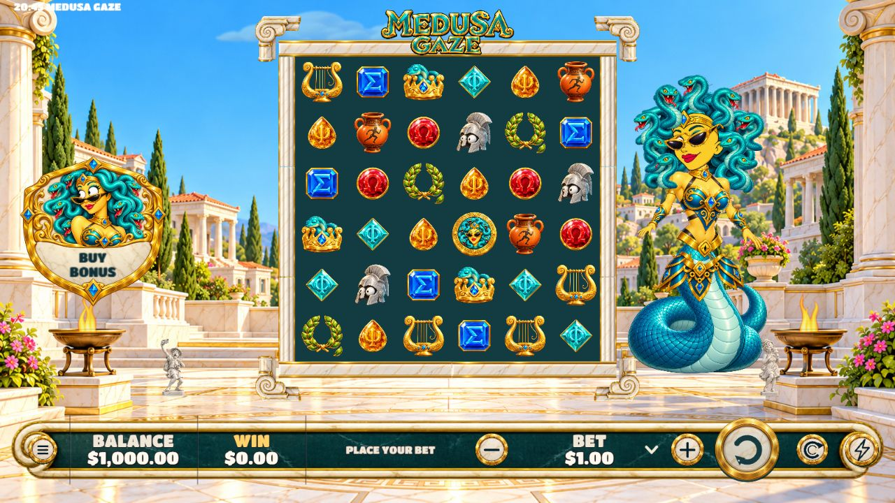
九項體驗修正 · 2026-10-26
INFO 叉號、BET／AUTO 金色選取、數字對比與手機深色讀數、先跳動再石化碎裂、破碎增益 +15%、全身呼吸及九條蛇的威嚇咬擊、盾牌內文字、日間火焰與花園風動、BET 懸停反饋、倍率出手發聲。
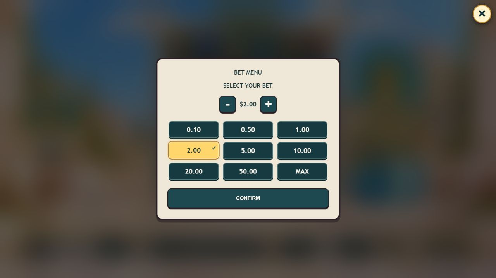
手機石板讀數改為深墨色；角色接地錨點固定，胸腹、腰尾及九條蛇分層活動。出手發聲為既有原創合成素材。
操作列與待機修正 · 2026-10-26
左右石像縮為梅杜莎高度的 1/5；底部操作列加高並改善文字邊距、TURBO 三級狀態對比。角色加入胸腹呼吸與肩頸、蛇髮延遲，骨盆固定。
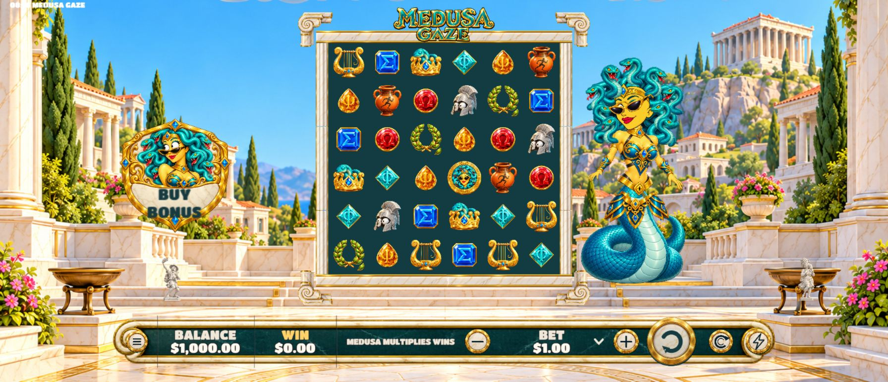
倍率招牌演出 v6
拉下墨鏡後雙眼轉綠，再向外發散光芒，透過弧光與粒子凝聚倍率球後飛出命中。三種 TURBO 使用相同的角色、音效與倍率動畫時序，只加速盤面消除／掉落。倍率數字維持正向，中央顯示原得分 × 倍率 = 最終得分，免費遊戲另列 TOTAL 累積倍率。
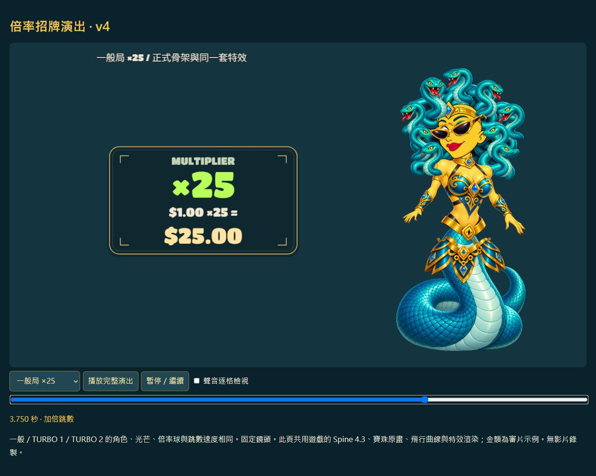
實際遊戲畫面
15 次免費遊戲已完成本地回放，累積倍率 ×110，總得分 $198.90，可返回主遊戲。鏡頭、盤框與建築保持固定。
封面與商店縮圖
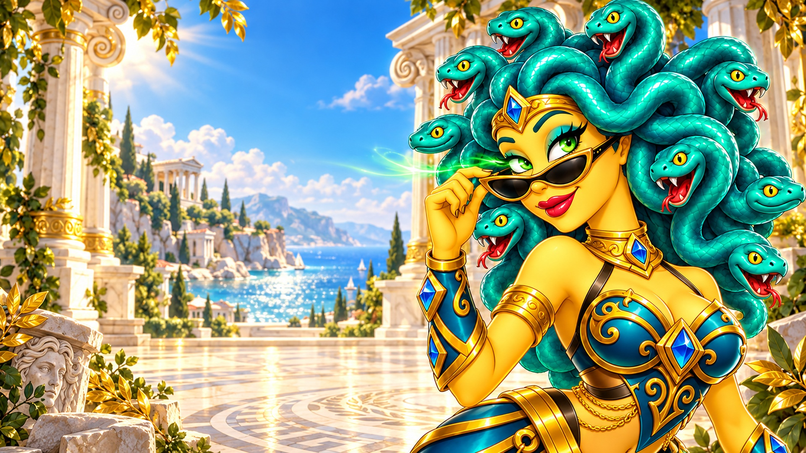
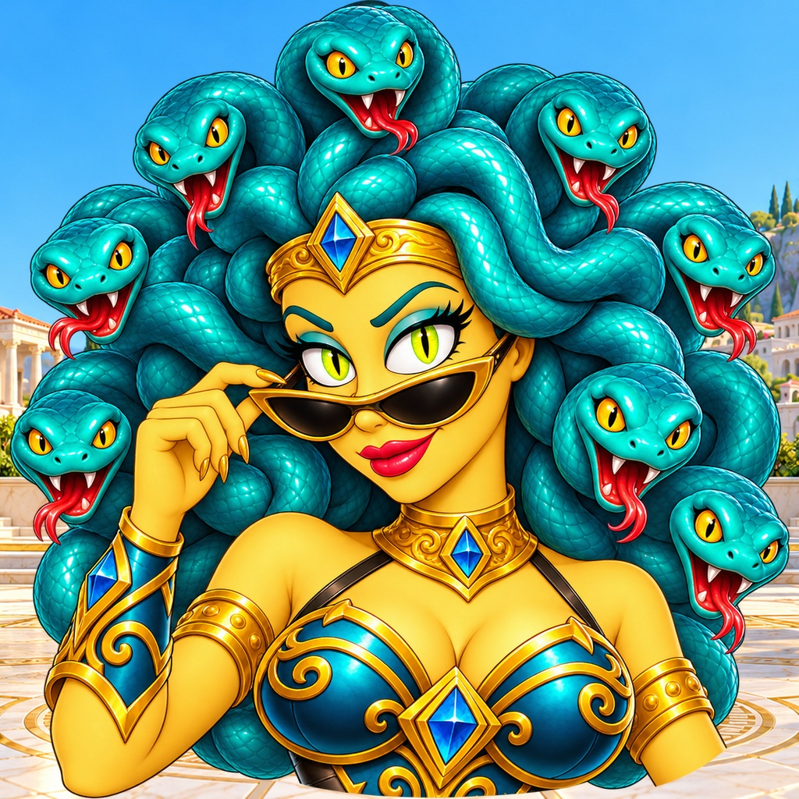
查看正式介面、倍率球與大獎牌素材
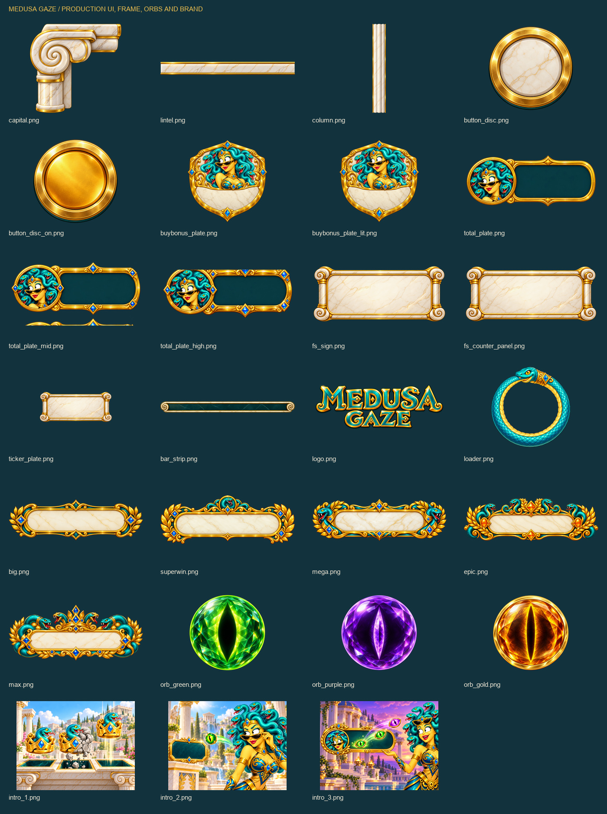